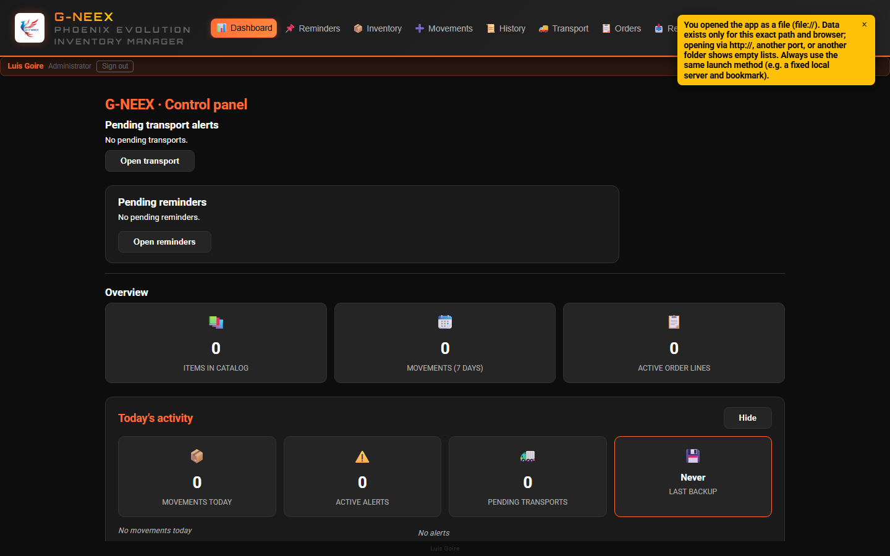
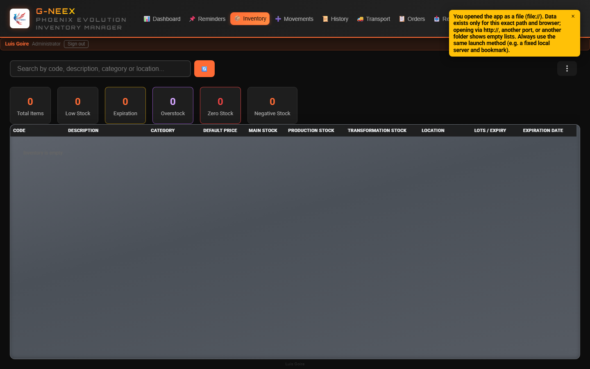
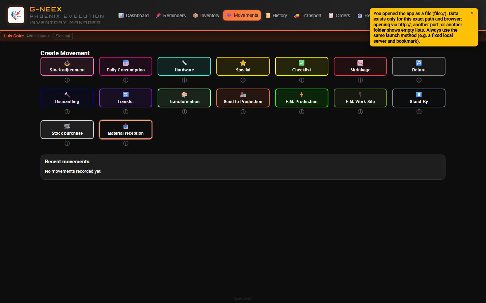
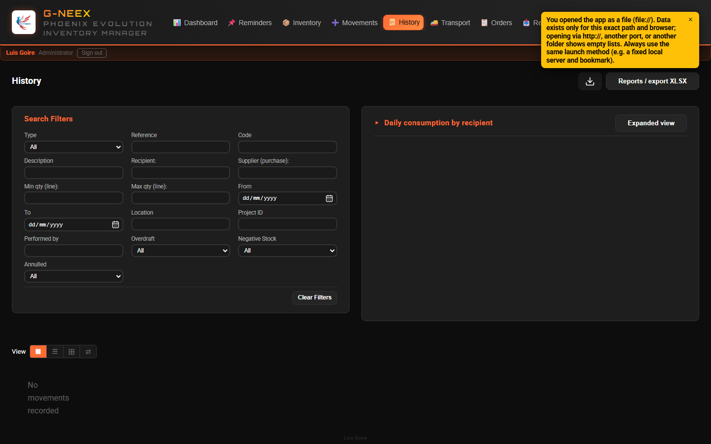
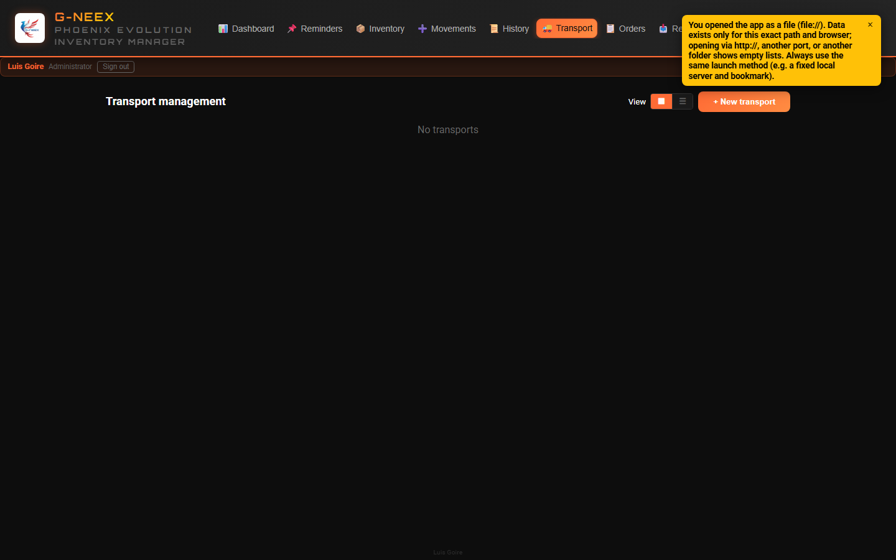
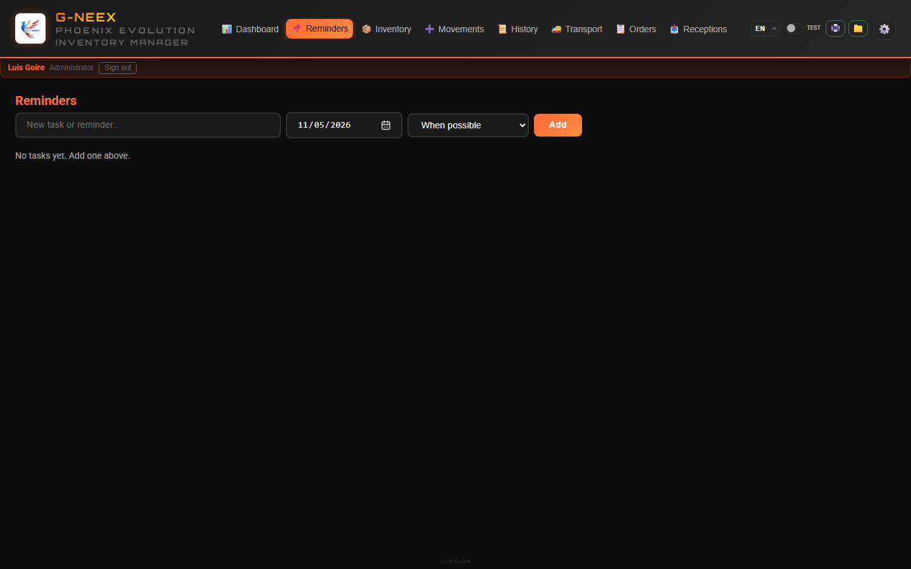

Phoenix Cell G-NEEX is developed by Luis Goire, as a hobby and with a strong interest in programming, on the path toward working as a professional developer.
Updated: May 2026 (v1.7)
If you're coming from 1.6, the points below are the only new pieces. The rest of the manual still applies.
#00ff41) sweeps slowly down the screen, orbital rings close around the logo, "WELCOME TO" is revealed via clip-path wipe, "G-neex" flashes with a strong neon flicker before staying lit, and finally "PHOENIX EVOLUTION" and your name appear. A linear progress bar covers the 8.7 useful seconds. It does not repeat on tab reload; it shows again on the next login.boxStocks and locationStocks).mainStock = max(current, sum(boxes) + sum(locations)). Never reduces main stock.Code, Description, MainStock (editable).gneex-hosted-api: the app stays 100 % offline; GneexApiClient is prepared to connect to the backend when it ships.Phoenix Cell G-NEEX comes from a real industrial need: tighter inventory control when the only technology available was a PC, without budget or infrastructure for anything else.
It began as an Excel workbook that gained macros and automation as daily shop-floor issues and operational errors appeared, one by one. It grew from a control sheet into an inventory manager built inside that workbook.
That work also became hands-on training: solving real problems with automation built scripting and programming skills. Operations and learning moved forward together.
After severe file damage—and recovery after heavy work—the project was named Phoenix: rising from the ashes. That recovered workbook is the direct predecessor and, in many ways, the DNA of the G-NEEX web application.
The Phoenix spreadsheet still supports operations wherever it adds value until G-NEEX is fully mature for everyday web use. This release is a deliberate step toward a tool intended to keep evolving.
The same narrative appears in the app under ⚙️ Settings → Background tab.
Under ⚙️ Settings you will find data tools, lists, the article editor, receptions, preferences, and more. This manual documents how the app works and what each screen does; how your company deploys or governs the installation is not covered here.
The Import/Export tab is available only to the administrator account. Other permission profiles—or temporary elevation—do not show this tab; opening Settings lands on Background instead. That tab groups full JSON backup (export/import), movements-only merge, shipped transports merge, initial inventory CSV/XLSX, archive/re-import movements, delete database, and the Daily consumption recipients quick view. Non-admin users rely on Employees and other tabs allowed for their profile.
Path: ⚙️ Settings → Import/Export tab (administrator only)
GNEEX_Backup_YYYY-MM-DD_HH-MM-SS.json file with all application data (inventory —per-item location text, per-location and per-box stock, warehouse location catalog included—; movements; daily consumption recipient lists —staff and occasional/external—; supplier list; transports; supplier order lines; users; reference counters; etc.)Typical use for a full backup: a safety net or moving an entire working copy. To share only day-to-day activity with another copy, also use the export / import movements only flow below.
Movements only (merging work): In the same place, Export movements only (GNEEX_Movements_….json) and Import and merge movements exchange activity between copies. The merge adds only movements whose id is not already in the target copy and applies quantities to inventory (material receptions are recreated when the file has enough data). If the id already exists, the local movement is kept. It does not replace user lists, transports, or other data; item catalogs should match, and interleaved dates between copies can make stock order look inconsistent. Always confirm the dialog the app shows.
Note (backups and overdraft): The full backup and movements-only files serialize movements as stored locally (including the technical hadOverdraft field). The file format and merge behavior are unchanged. On startup, the app may normalize inconsistent values for Stock purchase and Material reception. In History, filters, XLSX reports, and human-readable exports, the rule is consistent: a purchase or reception is not treated as overdraft solely because of an old incorrect flag.
Quick view: Only the administrator sees this block under ⚙️ Settings → Import/Export → “Recipients (quick view)”. Adding and removing staff and occasional names is on the Employees tab.
Path: ⚙️ Settings → Suppliers tab to maintain the master name list.
Users with Orders access can enter a supplier on each line (free text or suggestions loaded from that list). The PO/OC number is not entered when creating the order; it is captured when receiving goods under Movements → Stock purchase (with packing slip).
To free up space by removing old movements:
GNEEX_Archived_Movements_FROM_to_TO_YYYY-MM-DD_HH-MM-SS.json is downloadedThe JSON contains a readable movements summary and _rawMovements with the full movement objects as stored. The overdraft field in the readable part follows the same rule as on-screen history; _rawMovements keeps the raw technical data without reinterpretation.
Allows importing a CSV or XLSX file with the initial inventory. The columns must match the expected format.
You can use the template icon button to export a styled .xlsx sheet with the correct column order (orange header row) and one editable example row. You can also save as CSV from Excel using the same column order.
DELETE ALL (or BORRAR TODO / SUPPRIMER TOUT)A fixed confirmation phrase helps prevent accidental data loss; follow your site’s runbook for production machines if applicable.
G-NEEX stores inventory, movements, users, and session data in the browser's local storage (for example localStorage). Passwords are stored as salted hashes; they do not appear in plaintext in the application source. Anyone with access to the device or user profile, or a malicious browser extension, could read or tamper with that data. The app does not replace a central server with corporate identity policies. Use OS session lock, personal accounts, and exported backups as your organization requires. When importing a JSON backup, verify it comes from a trusted source.
Path: ⚙️ Settings → Article editing tab
On entry, if the app asks for an unlock code, follow the on-screen prompt (create or confirm) and use Unlock to continue. Then search by code or description, change any field (code, description, category, default price, stocks, location, min, max, etc.), and Save.
For Location, you can compose text from comma-separated labels; the dropdown lists effective warehouse slots and BOX1…BOX51 (grouped) to append with Add, alongside the editable location catalog on the same Settings tab.
If you check Treat as inventory consumable and click Save, the app adds the name (the article description, or code if there is no description) to the list under ⚙️ Settings → Consumables, used for purchase receipts without inventory and consumable orders. If you uncheck that option and save, it removes from that list the entry that matched the description or code before the change (when it was only there through this link).
How stock behaves in consumable mode follows the on-screen rules and messages.
Path: ⚙️ Settings → Expirations tab
Enter username and password. Session validation happens in the browser; the administrator account can manage users and passwords under ⚙️ Settings → Users.
When adding a user with role User, you can pick a template: Supervisor and the built-in reference profiles (e.g. Keith Lake, Guest, Patrick). Legacy operator templates are no longer offered for new accounts. Each option has a short description on hover (title). For a new administrator, choose role Administrator; that role does not use a permission matrix template. Keys and behaviour are listed in PlantillasPermisos.xlsx.csv at the repository root (documentation and future API alignment).
Login background images are listed in assets/login-bg-manifest.json (paths under assets/). If the list is missing or empty, the logo is used. When several images are defined, they may rotate automatically.
After signing in, you reach the panel (see §2.2).
Upon entering the application, a panel is displayed with today's information. The top bar has module buttons (e.g. 📦 Inventory in §2.3, ➕ Movements in §2.4):

| Card | What it shows |
|---|---|
| Movements today | Number of movements created today, with breakdown by type |
| Active alerts | Low stock + negative stock + articles about to expire |
| Pending transports | Transports that have not been dispatched or voided |
| Last backup | When the last backup was made (alerts if more than 7 days ago or never) |
Click Hide / Show to collapse/expand the panel.
View after clicking Inventory (📦): search, filters, stat cards, and the article table.

Type in the search field to filter by code, description, category, or location.
Next to the search field, the ⋮ menu groups inventory actions: export XLSX, print, show or hide the inline filter strips (Box / location, Depot, Consumable inv.), problems-only and “low-stock alert ignored” filters, Stock as-of date, box summary, box stock management, and more.
The first item is Hide inline filter bars (right-pointing chevron): it closes all three filter strips in one step when any strip is open and resets each dropdown to All when needed. It is disabled when no inline strip is open; when a strip is open, use it to collapse the filter area without toggling each filter separately.
Use the as-of date filter to view inventory exactly as it was on a selected date. This affects table values, cards, and print/export outputs while active.
The top cards display:
Clicking any card (except "totals") opens a detail modal with the list of affected articles, option to export XLSX, and print.
In the low stock modal, the first columns are Ignore low-stock alert, Actions (🛒 to add the item to the purchase list), Code, then the remaining fields (description, stocks, dates, location).
Columns: Code, Description, Category, Default price, Main Stock, Production Stock, Transformation Stock, Location, Expiration.
In the Description column, the 📝 control (faded more when the item has no notes yet) opens a dialog to view and edit notes when it is active; Save persists changes. If editing is not offered but the item has notes, you can often open the same dialog in read-only mode; if there are no notes, the cell is plain text.
Row colors indicate the article's status (red = negative, yellow = low, orange = expiring, etc.).
If the window is narrow, scroll the table horizontally to see all columns without squashing the headers.
Location (article text field): for validations (movements, imports, stock consistency) only effective warehouse catalog labels and BOXn references count as canonical location. If stored text cannot be fully normalized to those tokens, saving from the editor may show a warning; no automatic relocation placeholder is inserted anymore.
Use the Box / location dropdown for quick visual filtering by box number inferred from Location text and from box numbers that have stock in box management, and by predefined warehouse locations in the app catalog (e.g. E1R, ETOP, BIN 8, CONTAINEUR CHANTIER, ARMOIRE AVEC CLE) when the location text matches or the same location appears only in per-location stock (quantity chips); tags appear next to the cell. Next to export and print, Box summary (from location text) groups items when Location looks like BOX1, BOX 1, or variants (“box”, “caja” + number; optional space after BOX). Several boxes may appear in the same field, comma-separated (e.g. “BOX1, caja 2”). In that modal, click a row to see the article lines for that group. If an item has multiple boxes in location, it is counted under each detected box. Also, in Box stock management, you can add, edit, delete, and redistribute stock between boxes and Production / Transformation stock columns; you can also transfer from box to direct location (no box). That action deducts from the origin box, appends the location to item text (without duplicates), and stores per-location quantity (chips such as E2R: 12) in the Location cell. You can still export all box stock (same layout as the template) for backup or editing and re-import it, download an empty template when needed, and import box quantities. The official first row is Codigo, Caja, UbicacionCaja, CantidadCaja, CantidadCajas, Vacia (Datos sheet, the one G-NEEX generates). In Vacia, use 1/true/yes to mark a box as empty (forces quantity 0). For negative movements (consumption/output), box selection is optional: if selected, stock is discounted from both box and main inventory; if not selected, discount applies only to main inventory.
Recommended quick test (Location):
BOX1E1R or e1r (case-insensitive)BIN 8, BIN2, or BIN 2CONTAINEUR CHANTIERBOX1, BOX2caja 3, BOX4no boxBOX52 (out of range, ignored)BOX1, BOX1 (same box is not duplicated)Print windows across the app use A4 portrait (standard margins); tables do not compress every column to the same width (the article code stays on one line and readable); other long text wraps inside cells as needed (inventory, history, movement detail, and other printable lists).
Export and print here need those buttons to be visible and active on your screen.
Movements (➕) in the bar: type grid; choosing a type opens the overlay form.

If all quantities are 0, the app blocks processing (no stock change).
Use Create and Process movement when they appear; if they stay inactive, the form or action is not enabled for the current state.
| Type | Effect on stock | Project |
|---|---|---|
| Adjustment | Add or subtract | Optional |
| Daily Consumption | Subtract | Automatic |
| Hardware | Subtract | Required |
| Special | Add or subtract | Optional |
| Checklist | Subtract | Required |
| Waste | Subtract | Required |
| Return | Add | Optional |
| Dismantle | Add | Required |
| Transfer | Add or subtract | Optional |
| Transformation | Subtract | Optional |
| Send to Production | Subtract | Optional |
| E.M. Production | Subtract | Required |
| E.M. Site | Subtract | Required |
| Stand-By | No effect (pending) | Optional |
| Stock Purchase | Add | Special form |
| Material Reception | Add (or provisional, depending on category rules) | Required |
Stand-By movements are saved as drafts without affecting inventory:
Stand-By list: Shows pending drafts with options:
With an active session, there are up to two floating shortcuts (bottom-right by default), hidden until you use them. To show the Stand-by or Daily consumption shortcut, open Movements and select that type; it stays visible until you hide it.
| Shortcut | Purpose |
|---|---|
| Stand-by (⏸) | Quick access to pending Stand-by drafts; panel with list, go to Movements, or hide the shortcut. |
| Daily consumption (📅) | Panel of lines for Daily consumption not yet processed as a single movement. |
Daily consumption (close & catch-up): pending lines are tied to the local calendar day. If lines were left from a previous day (app closed overnight, date change with the tab open, etc.), on return you may see a notice and an automatic close/catch-up may run when stock rules allow; if it cannot run due to overdraft, review the cart manually. Daily consumption does not use a project number in the form. While Daily consumption is the selected movement type, the nightly auto-close (~23:00) and midnight roll do not interrupt you; when you switch to another movement type, any pending automatic close runs if applicable.
Movement date/time (Daily consumption): each time you add a line to the cart, that moment is stored. When you process, the movement’s saved timestamp is the first line added in that batch (if an older line had no stamp, the process time is used as a fallback).
Decimal quantities: quantities and stocks are shown and stored with at most four digits after the decimal separator (rounding).
Recipient with “Other (name not on list)”: type the name freely when it is not in the dropdown. This section only requires identifying who receives the material; there is no extra classification.
Daily consumption by recipient (History): everyone with access can expand the section and filters; editing the ledger, export, and print from that block are administrator only.
Movements that withdraw more stock than available (consumption, transfers, send to production, etc.) may open a modal for a mandatory reason and are marked in history with the overdraft indicator (! and a notice in the detail view).
Stock purchase and Material reception are inbound goods: they do not use that overdraft-justification flow. If older data incorrectly had an overdraft flag on those types, the app does not show them as overdraft in lists, filters, or detail, may fix the stored value on load, and reports follow the same rule.
When releasing Stand-by, the “would overdraft” check uses the Stand-by target movement type (not whichever type happened to be selected on the Movements form at that moment), avoiding false positives.
AJU000042, purchase COM000003). Older refs with more digits, purely numeric (000042) or hyphen form (COM-001) normalize when history loads.Path: Orders tab (📋 in the top bar).
Plan supplier lines tied to inventory (code, description, supplier, quantity). The PO/OC number is captured when you receive in Stock purchase (packing slip), not when you create the draft.
Above the list, switch View between the full details table (default) and tile cards; the choice is stored in this browser.
Above the table you can filter by:
Clear filters resets everything.
| State | Meaning |
|---|---|
| Inactive | Draft; you can edit quantity and supplier. |
| Ordered | Order confirmed; order date stored; awaiting goods. |
| Partial / full receipt | According to quantity received vs ordered. |
| Cancelled | Only if nothing was received. |
When you use Partial receipt or Full receipt (remaining), the app switches to Movements, selects Stock purchase, and fills the form. Review and click Process movement. If you change item or quantity incompatibly with the line, the purchase may still save without linking (a warning is shown).
Stock purchase entered only under Movements (not from Orders first): after Process movement, if there is an Ordered or partial receipt line for the same inventory item — and when a supplier was filled in on the purchase, the same supplier — you may get a prompt asking whether this purchase belongs to that open order. Buttons are Yes / No (No only skips linking; the movement remains saved). If you confirm, Received qty, line status, and row actions in Orders update like a receipt opened from the panel (including partial vs over-quantity prompts). If nothing links, you may be offered to register the purchase as a new order line (again Yes / No).
Each line shows a reference like #AJU000012 (prefix per type; legacy rows may still be digits-only) and a date timeline.
If the purchase comes from the Orders panel, movement detail shows a banner; list cards may show 📋.
Managing lines, receipts, and the panel XLSX export depends on the actions and buttons you see when using Orders and Movements in your copy.

The History tab shows filtered movements with color and icon according to the type.
Use the View control for Tiles (icon grid, default), List (compact rows, file-explorer style), Details (columnar table), or Chronological carousel (horizontal card sequence from newest to oldest; the top strip and each card show day, 3-letter month, 4-digit year, and local time; side arrows step one movement). Minimized cards also show the Project ID when applicable. The choice is stored in this browser.
Date format: throughout the app, on-screen dates use day, 3-letter month, and 4-digit year; when time is shown, it is local time in 24-hour format (inventory, tables, reminders, transport, readable export metadata, etc.).
Fully annulled movements and partial annulments (some lines annulled without voiding the whole movement) appear in Tiles, List, and Carousel as a diagonal stamp (dashed tilted frame); the label «Partial annulment» identifies the latter. In Details view and in the modal, status uses the same wording.
You can filter by:
Clear filters empties all criteria.
Click a card to see the full detail:
Adjuntos/…; use «Copy path (legacy)» and open from Explorer.In the detail modal:
Voiding or rolling back in the detail view requires the modal to show those actions as active (depending on type and state).
Open the Transport (🚚) button. The tab shows the board and actions (create, ship, void, and so on) as enabled for your current screen.

Shows cards for each transport with: project, dispatch date, line status (Ready/Partial), linked receptions.
View switches between Tiles (card grid) and List (single column of full-width cards); the choice is stored in this browser.
Click a card to expand its detail. In the expanded detail, Attachments (📎) links shipment documents from any folder (no copy into the app); viewing works in Chrome/Edge like movement attachments.
At the top of the tab, Cargo prepared to depart summarizes each active transport (not yet shipped, not voided): counts of linked checklists, site and production electrical movements, and project material receipts that are not yet marked as shipped. Material may appear queued when no active transport exists yet for that project.
When you click Ship truck, the app records the shipment and marks the linked checklist, site E.M., and production E.M. movements on that load, plus any material receipts for the same project that were still pending shipment (when several trucks serve one project, each shipment marks only what was still pending). Movement detail in History shows the timestamp once it left with a transport. Void dispatch, reopen planning, or delete transport clears those marks tied to that transport.
If an action is unavailable, the on-screen control is inactive or missing.
Movements of type Checklist and E.M. Site automatically create or link transports. If an active transport already exists for the project, lines are added to the existing one.
Critical actions (e.g. Ship, Delete) only become available when line status allows it.
Files are descriptively named with the date range (.xlsx; Datos sheet with themed styling and Info sheet with export metadata):
GNEEX_All_Movements_2024-03-15_to_2026-04-15.xlsxGNEEX_Item_Consumption_cable_2025-01-10_to_2026-03-20.xlsxUse the report or XLSX download when the button is visible; pick report types in the dialog.
Path: ⚙️ Settings → Receptions tab
Table with all registered receptions. They can be searched by text.
Requires Recep. permission.
Theme and language preferences are saved automatically. The demo snapshot is separate from the JSON backup file. Note: files you export to a folder on your computer during the demo (for example XLSX in the project folder) are not removed when you leave demo mode; only localStorage in the browser is reverted.
The top bar shows, among other things, the active session label, a role or mode summary (as your build presents it), and Log out to return to the access screen.
Depending on context (task, data state, current tab), some actions are dimmed or a short message explains that the action does not apply. That is not a fault of the app: in another flow or with other data, the same control can become available again.
Path: reminders button in the top bar, Reminders tab when you can open it.

You create and manage operational reminders with due date and priority from that screen when the module is available in your environment.
The application is created by Luis Goire, who builds it as a programming enthusiast and with the goal of growing into a developer role.
Email: blakillbyte@gmail.com
The manual walks through Inventory, Movements, Orders, History, Transport, receptions in Settings, reports, data import/export, and demo mode. Each module is used with the visible tabs and buttons: when something does not apply, the interface dims or hides it without blocking the rest of your work.